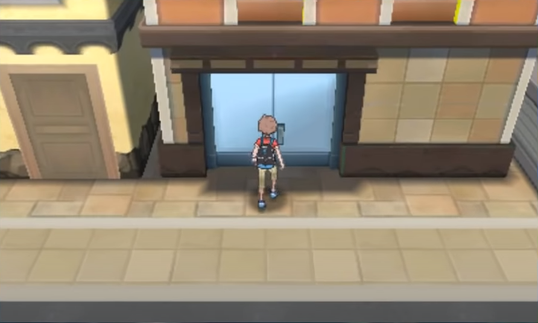
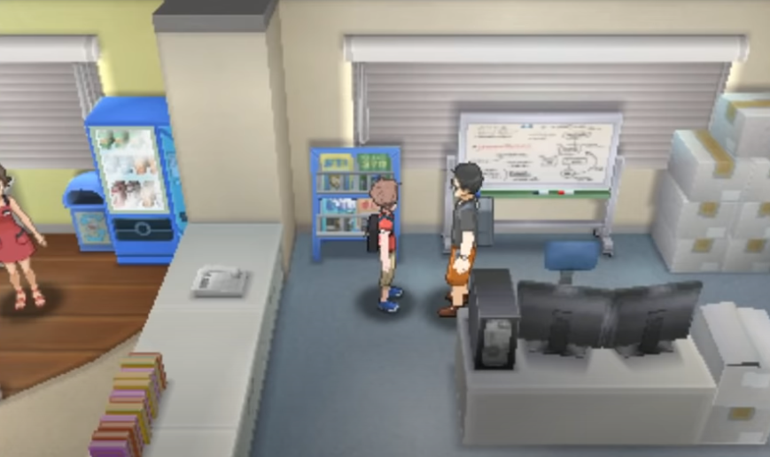
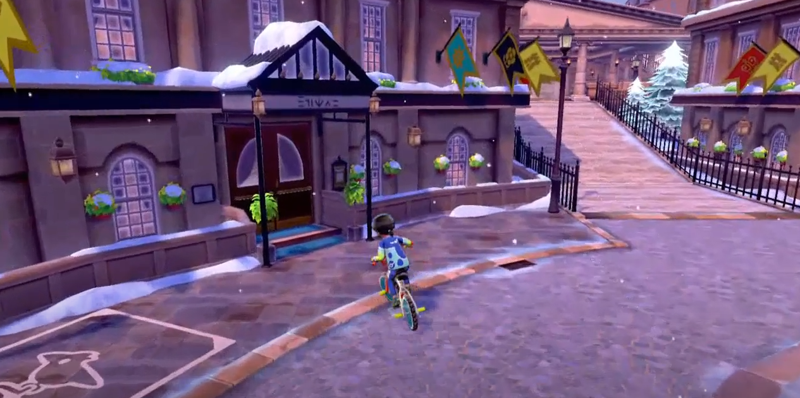

Ce charme, apparu dans pokemon Noir 2 et Blanc 2, augmente considérablement la chance de trouver un
pokemon shiny.
Dans Noir 2 et blanc 2, X et Y et Rubis Omega et Saphire Alpha :
Vous pouvez l'avoir au près du professeur de la region après avoir complété le pokédex
Nationnale.
Dans Pokemon Soleil et Lune et Ultra-Soleil et Ultra-Lune:
Rendez-vous à Ho'ohale dans ce batîment:
Parlez au réalisateur du jeu une fois le pokédex de la région terminé:
Dans Pokemon Let's Go Pikachu et Let's Go Evoli:
Rendez-vous à Céladopole dans la Résidence Céladon:
Parlez au développeurs du jeu une fois le pokédex de la région terminé:
Dans Pokemon Epée et Bouclier:
Rendez-vous à Ludester dans ce batîment:
Parlez à l'homme en tenue de médecin après avoir complété le pokédex de Galar:

Dans Pokemon Diamant Étincelant et Perle Scintillante:
Rendez-vous au Rive du Lac Courage dans ce batîment:
Parlez à l'homme en tenue de médecin après avoir complété le pokédex de Galar:
Dans Légendes Pokémon : Arceus:
Donner par Selena après avoir parlé au professeur Lavande une fois le pokedex complété au niveau 10
pour chaque pokémon.
Dans Pokémon Écarlate et Violet:
Donner par Jacq dans la salle de biologie après avoir complété le pokedex.